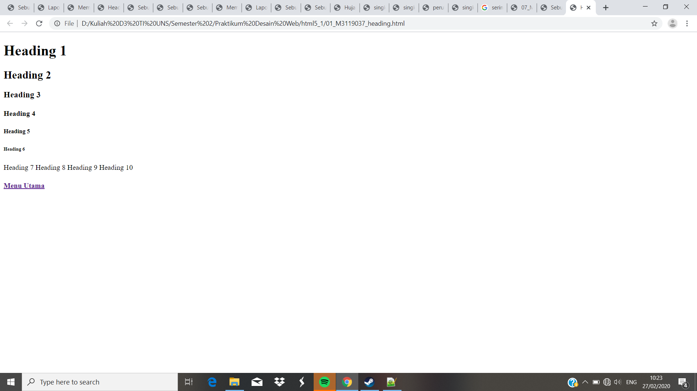

Membuat Heading
Pada percobaan kali ini kita akan membuat heading dari level 1-10. Dalam pembuatan Heading kita perlu menggunakan perintah <h1> dan ditutup dengan </h1> kita coba hingga angka 10.
Codingan
<!DOCTYPE html>
<html>
<head>
<meta charset="UTF-8">
<title>Heading.html</title>
</head>
<body>
<h2> Membuat Heading</h2>
<p> Pada percobaan kali ini kita akan membuat heading dari level 1-10.</p>
<h1>Heading 1</h1>
<h2>Heading 2</h2>
<h3>Heading 3</h3>
<h4>Heading 4</h4>
<h5>Heading 5</h5>
<h6>Heading 6</h6>
<h7>Heading 7</h7>
<h8>Heading 8</h8>
<h9>Heading 9</h9>
<h10>Heading 10</h10>
Tampilan Hasil Percobaan

Kesimpulan
Pada percobaan heading kali ini, dapat kita lihat bahwasalnya semakin besar level yang kita tuliskan, maka ukuran font yang akan ditampilkan makan akan semakin kecil.
Dalam percobaan kali ini html hanya dapat menampilkan heading sebanyak 6 level saja.